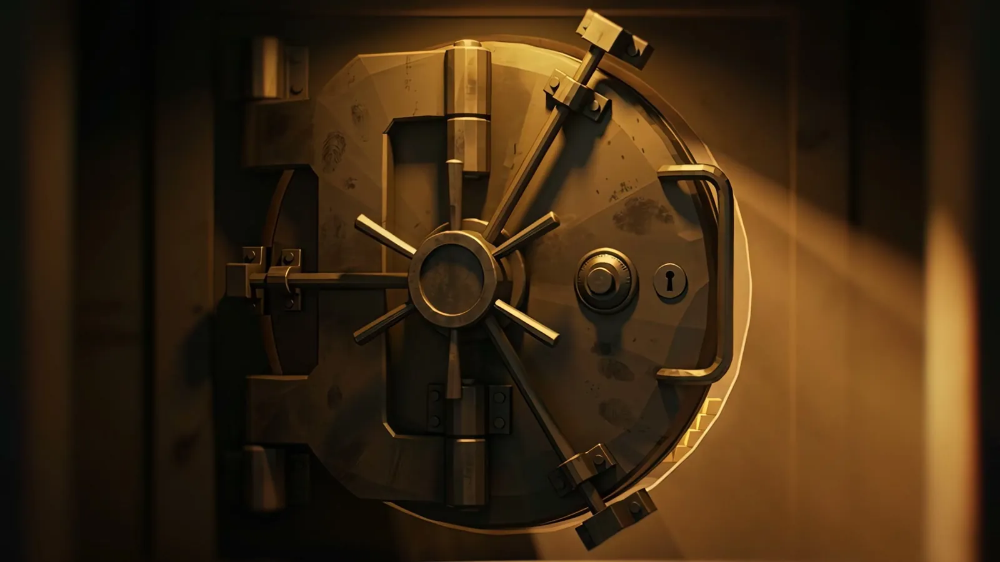
FLAWLESS
Ten layers of security. One half-eaten sandwich. Told alongside the man who pulled it off.
01 · The Film
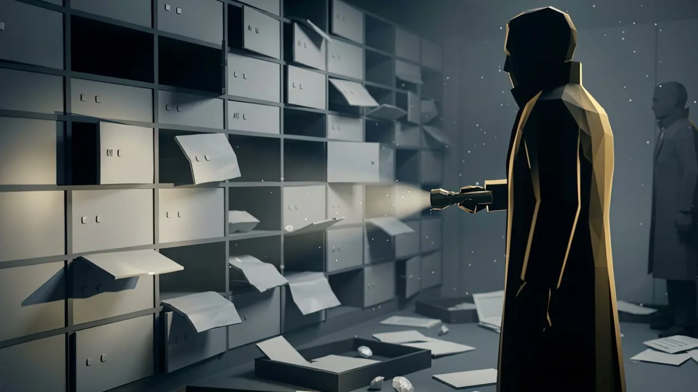
▶ Watch on YouTube · 16:56 · 4KFebruary 2003. A crew from the ‘School of Turin’, led by Leonardo Notarbartolo, empties a vault behind ten layers of security and walks out with over $100 million in diamonds — without a single alarm. What undid them was one careless mistake.
“I am grateful to you for the documentary — I like it very much.”
“Ti sono grato per il documentario, mi piace molto… molto bello.”
02 · The Interview
FLAWLESS is the debut episode of CITRINE, the true-crime channel I created, wrote, directed, edited and narrated. At its heart is an exclusive interview with Leonardo Notarbartolo, the man who led the heist — the plan, the vault, the mistake, in his own words.
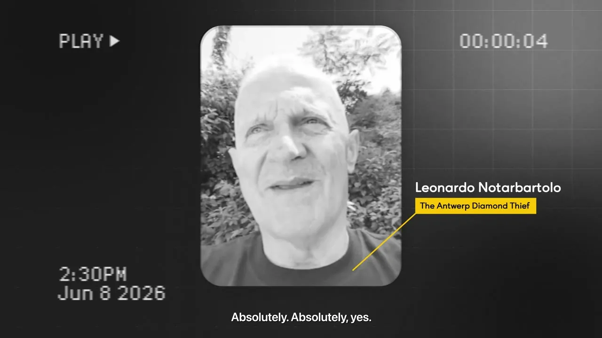
03 · The Reconstruction
Every location was modeled from scratch in the film’s “Amber-Noir” look — white maquette surfaces, amber light, forensic labels — with an original graphic language in CITRINE gold.
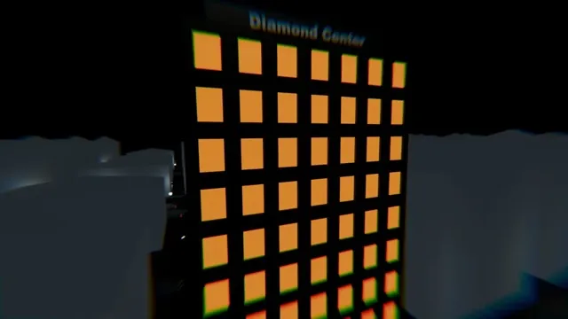
Diamond Center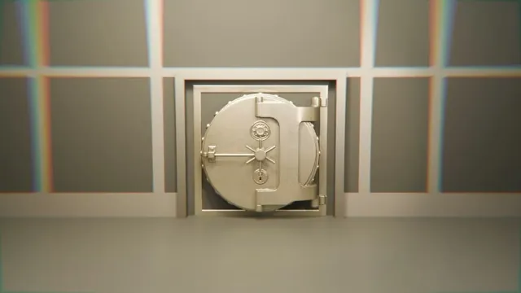
The Vault Door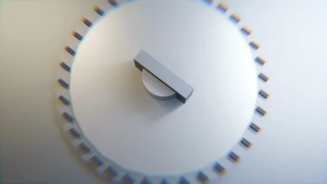
100M Combinations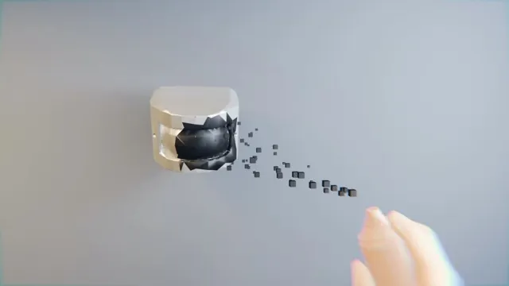
The Heat Sensor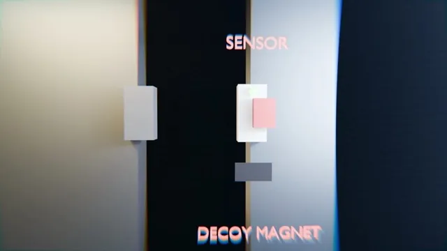
The Decoy Magnet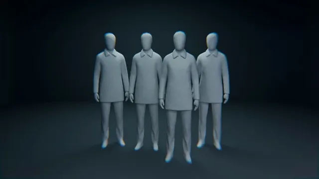
The School of Turin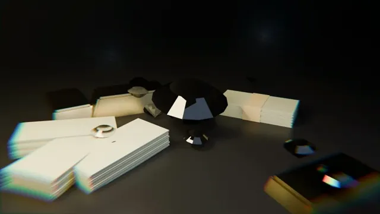
The Loot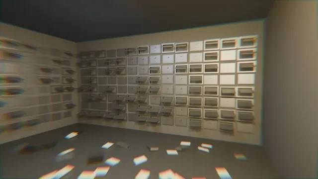
The Aftermath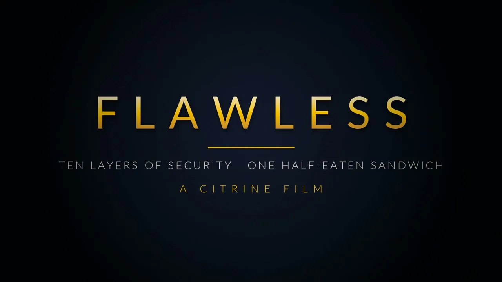
Title Sequence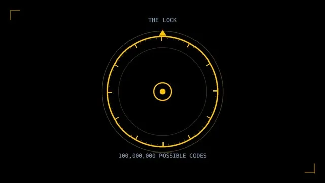
The Lock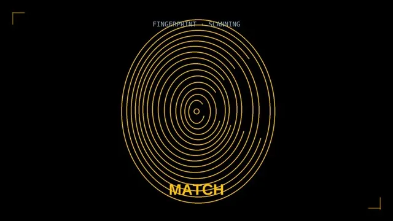
Fingerprint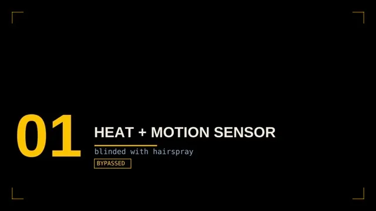
Security Counter04 · Behind the Edit
The part no automation can fake. Eight video tracks, eight audio tracks — every scene, graphic, subtitle, music cue and sound effect placed and color-coded by hand.
05 · Release
Two full audio versions — the original English narration and an Italian dub in my own cloned voice — plus Turkish subtitles. Titles and thumbnails were A/B-tested; these two carried the launch.
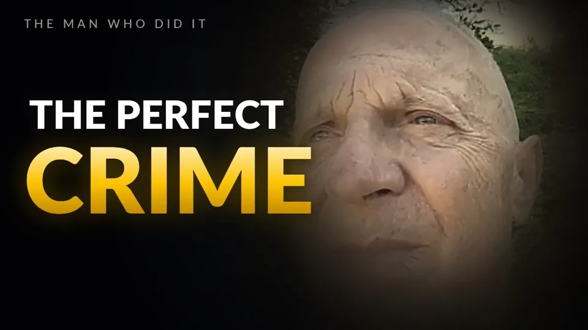
The Perfect CrimeCredits
- Direction · Writing · Edit · Narration · InterviewEray Balat
- 3D & AI VisualsBerkay
- Motion DesignHasan
- FeaturingLeonardo Notarbartolo
- MusicEpidemic Sound
- ToolsPremiere Pro · After Effects · Magnific · ElevenLabs
Have a story worth telling?
Documentaries, brand films and cinematic AI — written, directed and finished end to end.